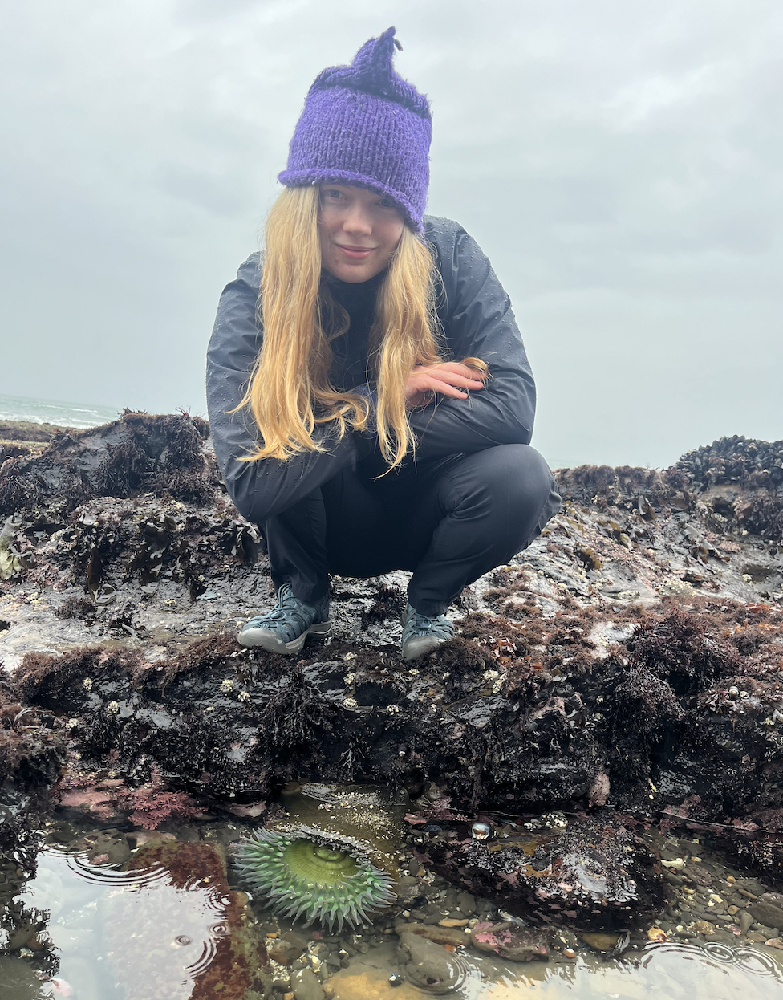

When the tides recede, the creatures living in the coast's rocky crevices are revealed. Scrambling over rocks and kelp, you can glimpse beautiful, slimy, alien-looking life, specially adapted to the turbulent conditions of the intertidal zone.
Tidepools are some of my favorite places to explore. Looking for a floating nudibranch or curled sea star among the rocks and kelp is like a wonderful treasure hunt! Tidepool creatures so different from the kind of animals we're used to on land, yet so beautiful and alive.
Interested in tidepooling? Use explore this website to learn what you can see and plan your visit!